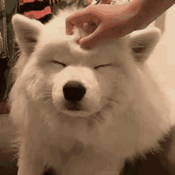

Dogs absolutely love attention and petting! It helps them feel loved and secure. Petting your dog not only strengthens the bond between you and your furry friend, but it also provides them with the physical touch they need to thrive. Giving your dog attention through petting can reduce stress, anxiety, and even improve their mood.
 Learn More About Petting Dogs